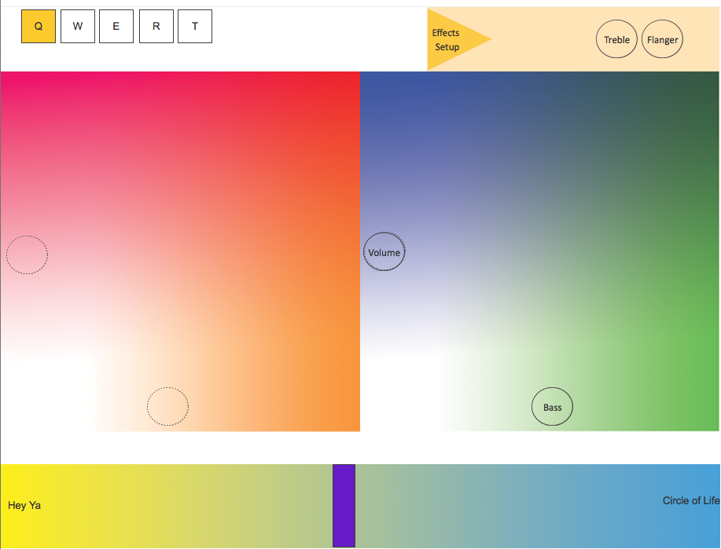

Beatwave: A Motion Tracking DJ App

Problem
Determine the best motion tracking technology for DJs to control music effects and design a system with that technology.
Action
Interviews, Contextual Inquiries, Competitive Analysis, Paper and Digital Prototype Testing.
Result
DJs found our prototype more performative and enjoyable than their existing hardware.
Overview
I developed BeatWave with Noura Howell, Simon Scott, and Chip Malt for the UC Berkeley class INFO 213 to bring the performative affordances of Leap Motion to DJing. Leap Motion is a device that tracks hand and finger movement in 3D space. Though we started with Leap motion, we pivoted to Myo, an alternative motion tracking arm band, when we learned it was more suitable through user testing. I led storyboard development and contributed to the contextual inquiry, persona development, brainstorming, and protyping.
beatwave from Bradford Malt on Vimeo.
User Research
We started the project with Noura's intuition that the affordances of Leap Motion go hand in hand with music and sound visualization. After researching sound manipulation technologies, we saw an opportunity to bring the performative and fun aspects of Leap Motion to DJing. To test our assumptions, we conducted six contextual inquiries with DJs and digital musicians and compiled our observations into 3 key personas, which motivated the rest of our design. We found that nothing dampens a DJs spirit like using laptop hardware.

Low Fi Prototypes
We also concluded that there are many types of DJs and many ways to manipulate sound, so we needed to narrow our focus for the scope of the class. To do this, we compiled our observations and feedback from the DJs to develop 3 paper prototypes with different approaches, including a different technology, Myo, which is a bracelet that tracks hand motions by muscle activity. Though Leap was our initial strategy, we did not want to exclude different technologies that may serve DJs better. For the Myo prototype, we intended to leverage Myo's gesture recognition technology to trigger sound clips.


After testing the dual grid paper prototype, we found that users liked the control it afforded and found the interaction intuitive. We decided to move forward with that version, and I developed a hi fi Justinmind prototype for the setup interface while my team mates implemented two different functional prototypes, one with Leap and one with Myo. Since our paper prototype users found the setup screen confusing, I integrated it into the main screen in the Justinmind version. Myo also tracks forearm angle, so we used it to modulate effects.
Pivoting Technology
We conducted several more tests on DJs and novices alike using these prototypes. At this point, we began to notice serious flaws with both Leap and Myo. Leap would lose track of users' hands. It also took time to calibrate at the beginning. Myo failed to recognize gestures most of the time, especially on small arms. Promisingly though, Myo reliably tracked arm angle. We decided to move forward with Myo, since ultimately DJs found it more fun. We also rejected a full screen UI in favor of a narrow one that wouldn't obscure the DJ software and music visualizations. Below is the final design iteration. From our final user testing, DJs found that Beatwave exceeded their existing hardware for its performative qualities and enjoyability.

More Projects: